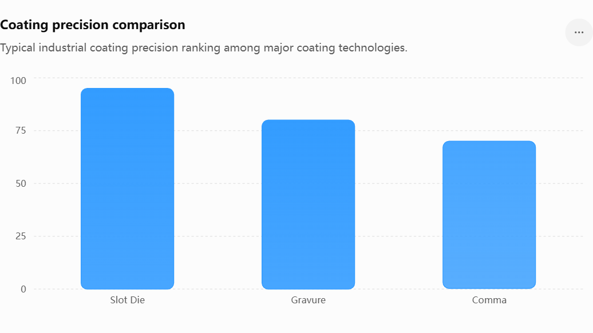

Choosing the Right Coating Machine: Slot Die vs Gravure vs Comma Coating Systems
Selecting the right coating machine is one of the most important decisions in any coating production project. Whether manufacturing lithium batteries, optical films, medical products, flexible electronics, packaging materials, or advanced functional coatings, the coating method directly affects product quality, production efficiency, investment cost, and long-term profitability. This buyer's guide compares the three most widely used industrial coating technologies—Slot Die Coating, Gravure Coating, and Comma Coating—to help manufacturers choose the most suitable solution for their applications.

Project Overview
Project Overview
As advanced manufacturing industries continue to grow, coating technology has become a critical production process across numerous sectors.
However, many manufacturers struggle to determine which coating technology best fits their products.
Choosing the wrong coating system can result in higher operating costs, lower product quality, excessive material waste, and limited future scalability.
Understanding the differences between Slot Die, Gravure, and Comma coating systems is essential for making an informed investment decision.
Key Points
- Slot Die Coating
- Working Principle
- A precision pump feeds coating material into a specially designed die head. The material exits through a narrow slot and is deposited uniformly onto the substrate.
- Advantages
- Highest coating precision
- Excellent thickness control
- Low material waste
- Suitable for expensive functional materials
- Easy automation integration
- Limitations
- Higher equipment investment
- More complex setup requirements
- Typical Applications
- Lithium battery electrodes
- Optical films
- OLED materials
- Flexible electronics
- Semiconductor materials
- Gravure Coating
- Working Principle
- An engraved roller transfers coating material onto the substrate through mechanical contact.
- Advantages
- High-speed production
- Mature industrial technology
- Suitable for large-volume production
- Good repeatability
- Limitations
- Higher material waste
- Roller replacement costs
- Less flexible for frequent product changes
- Typical Applications
- Packaging films
- Decorative films
- Adhesive tapes
- Printing materials
- Industrial coatings
- Comma Coating
- Working Principle
- A precisely controlled gap between the coating roll and blade determines coating thickness.
- Advantages
- Lower equipment cost
- Simple operation
- Flexible thickness adjustment
- Suitable for pilot production
- Limitations
- Lower precision than Slot Die
- Reduced consistency at high speeds
- Typical Applications
- Adhesive coatings
- Functional films
- Textile coatings
- Laboratory production
- Specialty materials
- Investment Cost Comparison
- Lowest Investment
- Comma Coating
- Medium Investment
- Gravure Coating
- Highest Investment
- Slot Die Coating
- However, total ownership cost should be evaluated alongside quality and material savings.
- Which Technology Should You Choose?
- Choose Slot Die If:
- You manufacture lithium batteries
- You produce optical films
- Material costs are high
- Precision is critical
- Choose Gravure If:
- Production volume is very high
- Product specifications remain stable
- Packaging applications dominate production
- Choose Comma If:
- Budget is limited
- Product development is ongoing
- Production volumes are moderate
- Process flexibility is important
Implementation & Workflow
Phase 1
Product Requirement Analysis
Phase 2
Material Property Evaluation
Phase 3
Coating Technology Selection
Phase 4
ROI & Cost Analysis
Phase 5
Line Design & Engineering
Phase 6
Equipment Manufacturing
Phase 7
Installation & Commissioning
Phase 8
Mass Production Launch
Customer Value & Results
Manufacturers benefit from:
Better Investment Decisions
Selecting the right technology avoids costly mistakes.
Improved Product Quality
The correct coating method improves consistency.
Lower Operating Costs
Reduced waste and improved efficiency.
Higher Production Capacity
Technology aligned with production goals.
Future Scalability
Supports long-term growth strategies.
Stronger Competitive Advantage
Better products and lower manufacturing costs.
Conclusion
There is no single coating technology that fits every application.
Slot Die, Gravure, and Comma coating systems each offer unique advantages depending on product requirements, production volume, coating materials, and investment objectives.
For high-precision applications such as lithium batteries, OLED films, and advanced electronics, Slot Die coating is often the preferred choice. For high-volume packaging and industrial coatings, Gravure technology remains highly competitive. For flexible and cost-effective production, Comma coating provides an attractive solution.
Looking for the Right Coating Machine?
Our engineering team can evaluate your product specifications, coating materials, production targets, and budget requirements to recommend the most suitable coating technology and design a customized coating line solution for your factory.
Challenge
Manufacturers often face several challenges when selecting coating equipment.
1. Product Quality Requirements
Different products require different coating precision levels.
2. Production Capacity Goals
Throughput requirements vary significantly.
3. Material Costs
Some coating materials are extremely expensive.
4. Investment Budget
Equipment costs vary greatly between technologies.
5. Future Expansion Plans
Production requirements may evolve over time.
6. Process Complexity
Certain materials are easier to process with specific coating methods.
Solution
The best coating machine depends on product requirements rather than equipment price alone.
Recommended Approach
Analyze coating material properties
Define thickness tolerance requirements
Determine production volume
Evaluate future scalability
Compare total cost of ownership
Consider automation requirements
Selecting the correct coating technology can significantly improve long-term profitability.
Workflow & Layout
Typical coating line workflow:
Step 1
Material Preparation
↓
Step 2
Substrate Unwinding
↓
Step 3
Coating Application
↓
Step 4
Thickness Control
↓
Step 5
Drying / Curing
↓
Step 6
Inspection
↓
Step 7
Rewinding
↓
Step 8
Slitting & Packaging

Results & ROI
- Typical performance improvements after selecting the correct coating technology:
- Product Quality Improvement：20% – 60%
- Material Utilization Improvement：10% – 40%
- Production Efficiency Increase：20% – 100%
- Defect Reduction：15% – 50%
- Labor Reduction：20% – 50%
- ROI：1 – 5Years
Equipment List
- Core equipment typically includes:
- Unwinding System
- Slot Die Coating Head
- Gravure Roller Unit
- Comma Blade Coating Unit
- Pumping System
- Drying Oven System
- Web Guiding System
- Tension Control System
- Thickness Measurement System
- CCD Inspection System
- Rewinding System
- PLC Control Cabinet
- MES Interface
- Quality Monitoring Platform
Related Blog
Start with Your Business Challenge
Tell us about your warehouse, factory, or production requirements. We'll help you explore practical automation solutions and relevant project references.